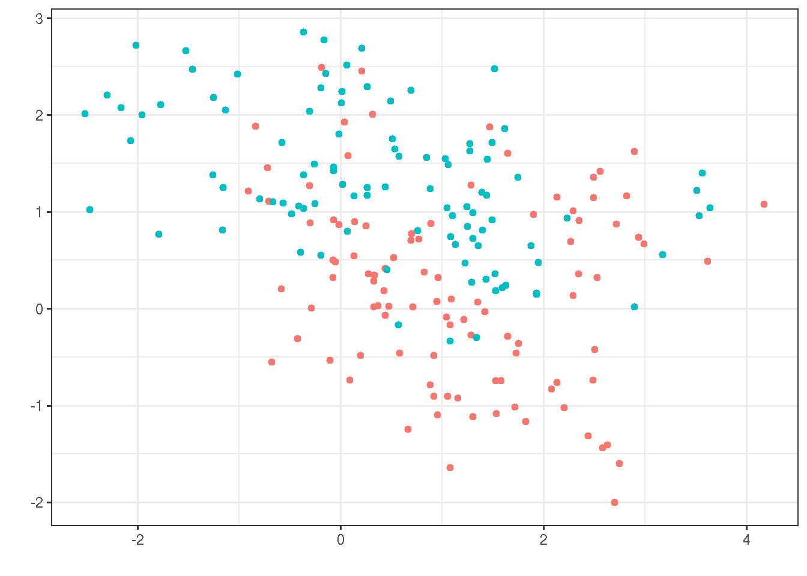

3 ESL - Overview of Supervised Learning
library(ElemStatLearn)
library(data.table)
library(ggplot2)
data("mixture.example")
mixt <- mixture.example
train <- data.table(X1=mixt$x[,1], X2=mixt$x[,2], Y=mixt$y)
f <- ggplot(train) + geom_point(aes(x=X1, y=X2, color=factor(Y)))
f <- f + labs(x='', y='', color='y')
f <- f + theme_bw() %+replace% theme(legend.position='none')
print(f)